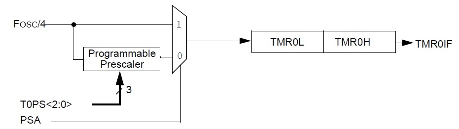
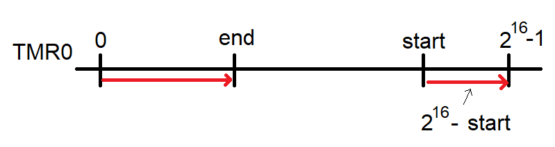

| Lecture: | 9 |
| Objective: | Understand the operation of the timer
and how to use it to create precise delays. |
Timer
The PIC timer subsystem is a sophisticated collection of circuitry to
make precise time measurements. The core functionality of the timer,
shown in the figure below, is the 16-bit counter. When enabled, the 16-bit
counts up from 0 to 2
16 - 1, and back to 0. The value of the
counter is indirectly available through the 16-bit register
TMR0, a variable that you can access
in your C programs in the MPLab X integrated development environment.
The state of the timer, whether its running or stopped, is controlled
by the
TMR0ON bit in the Timer Control
Register 0, called
T0CON.
Setting TMR0ON starts the timer counting
up, clearing TMR0ON stops the timer. Like many of the bits in registers,
MPLab X provides a convenient alias consisting of the register name
and bit name concatenated with a "." character. So, for example, the
following line of code starts the timer running.
T0CONbits.TMR0ON = 1;
When the counter counts up from 216-1 to 0, is is said to
roll-over. This roll-over sets the
TMR0IF
bit in the
INTCON register. This flag
is sticky, meaning that once it's set by the 16-bit counter rolling over,
it stays set until the user clears it in software. The TMR0IF bit is cleared
by writing a 0 to that value. In other words, the following instruction
clears the TMR0IF bit.
INTCONbits.TMR0IF = 0; // Clear timer overflow flag

The timer subsystem, adapted from Figure 11-2 on page 161 of the
PIC18F26K22 Data Sheet.
The timer counts up synchronously the main oscillator, F
osc,
divided by 4.
For the time being we will assume that the Programmable
Prescaler is set to 1:1, meaning that it can be ignored. This means
that on every fourth rising edge of the main oscillator, the counter counts
up by 1. Since the PIC bus clock runs at 64MHz, the counter counts up at a
rate of 16MHz. This means that in one second the timer counts
up 16,000,000 times. Each of those counts takes:
1 second 62.5 ns
----------------- = -------
16,000,000 counts count
This time interval, 62.5 ns, is the
time resolution
of the timer, meaning that we cannot confidently measure time intervals
with an accuracy smaller than this value. This marks a good point to
start measuring time with the timer using the following code snippet.
T0CONbits.TMR0ON = 1; // Assume that counter starts counting from 0
INCONbits.TMR0IF = 0; // Clear roll-over flag
while(INTCONbits.TMR0IF == 0); // Wait for roll-over flag to be set by counter
Your question is to calculate how long the
while(INTCONbits.TMR0IF == 0); statement takes
to execute, assuming that the counter starts at 0. In other words
I am asking how long it takes for the counter to roll-over. The
solution to this problem relies on
dimensional analysis, the
method of converting units of a quantity without changing its value.
This relies on multiplying by a
unity ratio, a ratio where the
numerator and denominator are the same but represented in different
terms. For example (60 seconds / 1 minute) is a unity ratio because
both the numerator and denominator represent the same length of time.
Dimensional analysis allows us to convert the bus clock into the time
required to roll-over the timer.
1 second 1000 ms 1 clk 2^16 counts
------------ * -------- * ------- * -----------
16*10^6 clks 1 second 1 count 1 roll-over
which comes out to 4.10 ms
---------
roll-over
Notice that the units clks, counts and seconds cancel each other
leaving the units on the right. This is of fundamental importance
to demonstrate on the exam. Do not skip any of the conversions,
even "obvious" ones like converting seconds to milliseconds.
Just like how the time resolution sets a lower limit on the
resolutions of time measurements, the value of 4.10 ms sets an
upper bound on the time resolution of the 16-bit counter using
a 1:1 prescaler. In order to measure time intervals longer than
this, we will need to resort to other methods. One obvious method
would be to put the delay loop inside a larger counting loop
that iterated the 4.10 ms delay as many times as needed. Another
method we will explore in the next lecture is to prescale the bus
clock before it gets to the 16-bit counter, slowing down the rate
at which the counter increments and thus increasing the amount of
time it takes the counter to roll-over.
In general, when I am working one of these problems, I work through
the equation from left to right, starting on the left with the bus
clock. You can simplify your life by choosing the proper ratio for
the bus clock. By this I mean, you have two choices for the bus
clock, (1 second / 16*10^6 counts) or (16*10^6 counts / 1 second). Since
the question asked for the time for a roll-over, I knew that we needed
time units in the numerator. Thus, I choose the bus clock ratio with time
units in the numerator.
Finally, note that this question was really asking for a unity ratio,
the ratio of two representations of the same quantity expressed using
different "rulers". The next question requires that we build a unity
ratio and then multiply it by a constant to determine the solution.
Calculate the number of timer counts that go by during 1 ms.
16*10^6 clks 1 second 1 count
------------ * -------- * ------- * 1 ms = x count
1 second 1000 ms 1 clk
Solving for x yields x = 16,000
This problem is different, because you need to put information on both
sides of the equation and some of the terms are not unity ratios.
Some problems
- Question:How much time goes by in 30,00 counts? State
your answer in ms and round to 3 significant figures.
Answer:
1 second 1000 ms 1 clk
------------ * -------- * ------- * 30,000 counts = 1.88ms
16*10^6 clks 1 second 1 count
- Question:Starting at 30,000, how long will it take TMR0 to
roll-over?
State your answer in ms and round to 3 significant figures.
Answer:
There are 216-30,000=35,536 counts until TMR0 rolls-over.
1 second 1000 ms 1 clk 35,536 counts 2.22 ms
------------ * -------- * ------- * ------------- = ---------
16*10^6 clks 1 second 1 count roll over roll over
- Question:What starting value would result in TMR0 rolling over
in 3ms?
Answer:
We will call the tarting value of the TMR0, x. TRM0 has to count up
from x to 216 in order to roll-over. This is a total of
2-x-x counts. This term is used int he solution to the
problem.
1 second 1000 ms 1 clk 216-x
------------ * -------- * ------- * ---------- = 3 ms
16*10^6 clks 1 second 1 count roll over
solving for x yields, x = 17,536
- Question:In the algorithm below, what initial value for TMR0
would produce a 2ms pulse on RA0?
TMR0 = ______;
INTCONbits.TMR0IF = 0;
LATAbits.LAT0 = 1;
while(INTCONbits.TMR0IF == 0);
LATAbits.LAT0 = 0;
Answer:
The calculation of the initial TMR0 for this code is the same as the
calculation for the previous problem.
We will call the target value of the TMR0, x. TRM0 has to count up
from x to 216 in order to roll-over. This is a total of
2-x-x counts. This term is used in the solution to the
problem.
1 second 1000 ms 1 clk 216-x
------------ * -------- * ------- * ------------- = 2 ms
16*10^6 clks 1 second 1 count roll over
Solving for x yields x = 33,536.
- Question:An active low push button is connection to RA2,
is pressed for an unknown amount of time - except that we know that it
is not more than 4ms. Complete the program below to
measure the number of TMR0 counts of the button press.
would produce a 2ms pulse on RA0?
while(PORTAbits.RA2 == ____); // wait for press
start = TMR0;
while(PORTAbits.RA2 == ____); // wait for release
end = TMR0;
duration = __________;
Answer:
The first delay loop must wait for the user to press the button, meaning
that the code must wait while the button produces its nominal logic level.
An active low push button is nominally logic 1, hence the first line reads:
while(PORTAbits.RA2 == 1);
The second delay loop must wait for the user to release the button,
meaning the code must wait while the button produces its active logi level.
An active low push button produces a logic 0 when pressed, hence the
third line reads:
while(PORTAbits.RA2 == 0);
Since the time that the button press ends is greater than the starting
time that the button is pressed, the difference
of the end and start time is computed in the last line.
duration = end - start;
There is one very big caveat that we must address and that is what
happens if TMR0 overflows between start and end? This situation is
pictured in the figure below.

If the timer rolls over during the button press, then
end < start. Since subtraction of end - start is equivalent to addition of
end with the 2's complement start we can re-write
duration = end - start; as
duration = end + (216 - start);
The second term in this statement
(216 - start)
is just the number of timer counts from the start of the button press
until the timer rolls-over (the timer rolls over when it gets to
216). This is illustrated as the red line on the right
side of the number line above.
The term "end" in the expression
end + (216 - start);
is just the number of timer counts from 0. This is illustrated
as the red line on the left side of the number line above. Thus
the sum of these two number lines accuratly describes the number
of timer counts the button was pressed.
- Question:How many TMR0 counts occur in 1.5ms?
Answer:
16*10^6 clks 1 second 1 count
------------ * -------- * ------- * 1.5 ms = 24,000 counts
1 second 1000 ms 1 clk
- Question:How many times would TMR0 rollover in 100 seconds?
Answer:
16*10^6 clks 1 count 1 rollover
------------ *------- * ---------- * 100 s = 24,414 rollovers
1 second 1 clk 216 counts
- Question:Starting at 0, what value would be stored
in TMR0 after 10ms?
Answer:
TMR0 will roll over because TMR0 only required 4.1ms (from earlier work) to
roll over. So my first step in this problem is to compute how many times
TMR0 rolls over.
16*10^6 clks 1 second 1 count 1 rollover
------------ * -------- * ------- * ---------- * 10 ms = 2.44 rollovers
1 second 1000 ms 1 clk 216 counts
From this we know that TMR0 will count up from 0 to 216-1 two
times with 0.44 of a roll over left over. The second part of the problem
will convert this 0.44 roll overs into counts.
216 counts
---------- * 0.44 rollovers = 28,928 counts
1 rollvers
So, starting at 0, TMR0 will end up at 28,928.
The rate at which the timer counts up is primarily determined by the
16 MHz bus clock, but can be slowed down using a prescaler. This is a
topic that we will take up next lecture.
Test your understanding
You can find the solutions embedded in the "source code" for this
web page by right mouse clicking on this web page and selecting
"view source". The solutions are in HTML comments.
- Assume that the counter is currently at 0xABCD, how long will
it take for the counter to roll-over. You should assume that the
prescaler is 1:1. State your answer in milliseconds with 3 significant
figures.
- Assume that the counter is currently at 0xABCD, how long will
it take for the counter to reach 0x1234. You should assume that the
prescaler is 1:1. State your answer in milliseconds with 3 significant
figures.
- Assume that the counter is currently at 0 and that the prescaler
is 1:1. What value will the counter have in 1.0 ms?
- Assume that the counter is currently at 0 and that the prescaler
is 1:1. What value will the counter have in 10.0 ms?
- How many times will the counter roll-over when counting up from 0
with a 1:1 prescaler in 3.14 seconds?
- The following questions assume that the counter is running a prescaler
of 1:1.
- Assume the timer starts counting at 0x0000, what will it read in 1mS?
- Assume the timer starts counting at 0x0000, what will it read in 0.9375mS?
- Assume the timer starts counting at 0x0000, what will it read in 1.875mS?
- Assume the timer starts counting at 0x0000, how long does it take the counter to reach 0x1000?
- Assume the timer starts counting at 0x0000, how long does it take the counter to roll over?
- Assume the timer starts counting at 0xF000, how long does it take the counter to roll over?
- Assume the timer starts counting at 0xF000, how long does it take the counter to reach 0x1000?